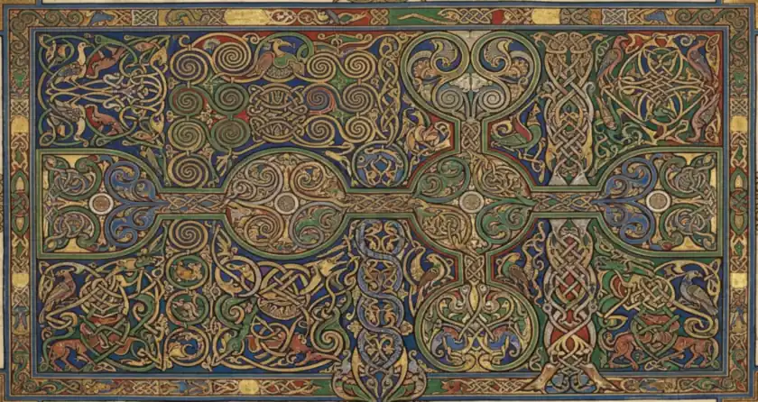
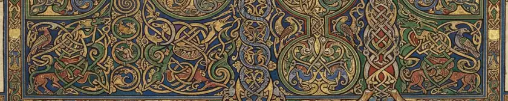
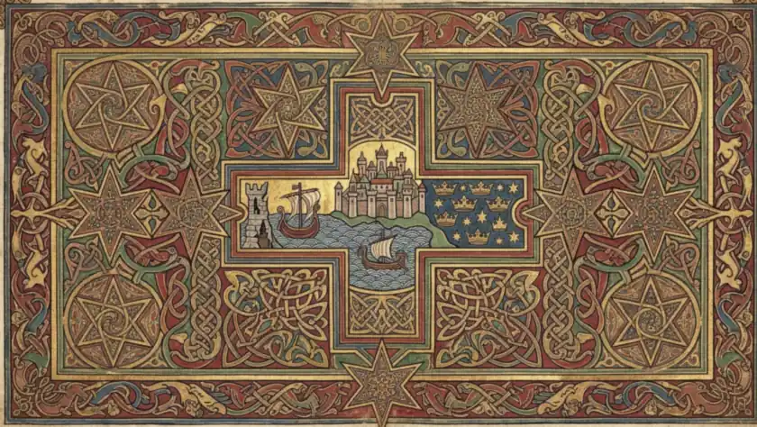
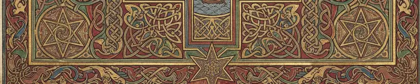
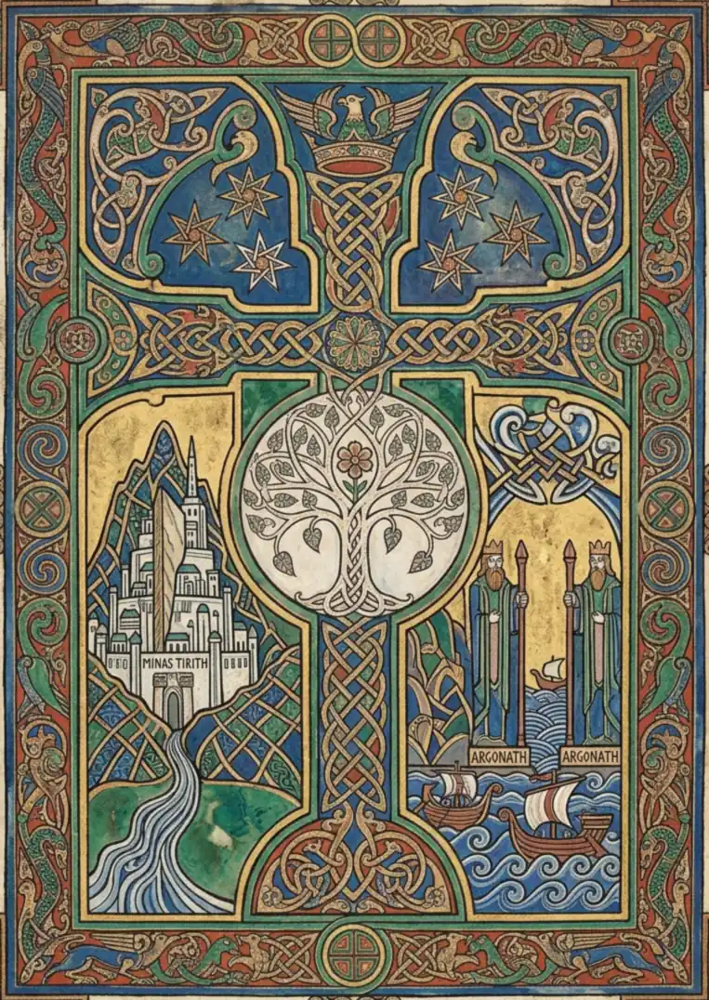
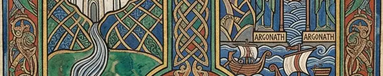

Living World, Relics and Devices · Turin and Glaurungi
Turin and Glaurung
SUPPLIED. The owner's plate, made with an AI tool, published on his own standing authorisation — on his word, not on a licence the file carries. The archive cropped, turned and recoloured it to this leaf. No generator is named: none was named to us. the archive's own record
A·iTurin
Volume IV · The opening of this volumeii
Turin and Glaurung
The same wide incipit structure as the Finrod plate: a large interlaced display monogram to the left, and to the right a red-bearded warrior in a dragon-crested helm with a black sword raised over a green dragon, mountains behind. Interlace border with corner bosses. No gutter fold (measured trough depth 17.8).
What the corpus attests
SCENE ATTESTED, POSTURE DIVERGES. Turin slays Glaurung -- Silmarillion ch. 21; Narn i Chin Hurin. But the text has him climb the ravine at Cabed-en-Aras and thrust upward into the dragon's soft belly from BELOW as it crosses over him. This plate stands him over the beast with the sword raised. That is a departure and it is recorded as one.
Why this volume
Volume IV is Living World, Relics and Devices -- 'what was made and what grows'. This one plate holds both halves of that thesis at once: Gurthang, a made thing with a will and a voice, and Glaurung, Morgoth's first-bred dragon. The Dragon-helm of Dor-lomin is in the plate too, and it is one of the few named heirlooms the texts follow through three owners.
From the same plate
SUPPLIED. The owner's plate, made with an AI tool, published on his own standing authorisation — on his word, not on a licence the file carries. The archive cropped, turned and recoloured it to this leaf. No generator is named: none was named to us. the archive's own record
A·ijContents
Living World, Relics and Devices · Menegroth, the Thousand Cavesiii

Menegroth, the Thousand Caves
SUPPLIED. The owner's plate, made with an AI tool, published on his own standing authorisation — on his word, not on a licence the file carries. The archive cropped, turned and recoloured it to this leaf. No generator is named: none was named to us. the archive's own record
A·iijMenegroth,
Volume IV · A great subject of this volumeiv
Menegroth, the Thousand Caves
A landscape leaf of wall-to-wall interlace and nothing else -- knotwork, spirals, and beasts and birds worked into the strands, in green, blue, gold and red, arranged as a bordered field about a central horizontal spine. No figure, no building, no landscape.
What the corpus attests
THE MAKING IS ATTESTED, THE ORNAMENT IS THE ARCHIVE'S. Menegroth, the Thousand Caves, was delved for Thingol by the Dwarves and its pillars were carved in the likeness of beeches. NOTHING in this plate depicts that: it carries no pillar and no tree, and every strand of it is the archive's own interlace standing in for a hall the corpus describes in words and never in line.
Why this volume
Volume IV is Living World, Relics and Devices -- 'what was made and what grows'. THIS PLATE CANNOT BE A PICTURE OF WHERE, BECAUSE THERE IS NO WHERE IN IT: no building, no landscape, no figure -- C464 already calls it 'the only plate of the nineteen with no figure at all, the only true insular carpet page in the set'. What is left is pure craft, and Menegroth's whole claim on the corpus is that it was MADE: hewn by Dwarves for a king, its pillars carved as trees. Ornament standing for a made thing belongs with the made things.

From the same plate
SUPPLIED. The owner's plate, made with an AI tool, published on his own standing authorisation — on his word, not on a licence the file carries. The archive cropped, turned and recoloured it to this leaf. No generator is named: none was named to us. the archive's own record
A·ivContents
Living World, Relics and Devices · Arnor, the seven stars of the North-kingdomv

Arnor, the seven stars of the North-kingdom
SUPPLIED. The owner's plate, made with an AI tool, published on his own standing authorisation — on his word, not on a licence the file carries. The archive cropped, turned and recoloured it to this leaf. No generator is named: none was named to us. the archive's own record
A·vArnor,
Volume IV · A great subject of this volumevi
Arnor, the seven stars of the North-kingdom
A landscape leaf: a repeating field of large seven- and eight-rayed stars in gold on red, green and blue grounds, with a cruciform panel at the centre holding a watchtower, two ships on a blue sea, a white walled city and a blue field of seven gold stars under a crown.
What the corpus attests
THE STARS AND THE KINGDOM ARE ATTESTED, THE ARMS ARE THE ARCHIVE'S. Arnor is the North-kingdom of the Dunedain and the seven stars belong to Elendil's house. No blazon of Arnor is drawn anywhere in the corpus; the arrangement in the centre panel is this plate's composition and is not a reproduction of anything Tolkien drew.
Why this volume
Volume IV is Living World, Relics and Devices. This plate is HERALDRY: a field of rayed stars with the kingdom's arms in a cruciform panel at the centre -- a tower, ships, a white city and a blue field of seven stars beneath a crown. A device is a made thing, and the star is its charge. It is not a map and it is not a people.

From the same plate
SUPPLIED. The owner's plate, made with an AI tool, published on his own standing authorisation — on his word, not on a licence the file carries. The archive cropped, turned and recoloured it to this leaf. No generator is named: none was named to us. the archive's own record
A·vjContents
Living World, Relics and Devices · Gondor: the White Tree, the stars and the crownvii

Gondor: the White Tree, the stars and the crown
SUPPLIED. The owner's plate, made with an AI tool, published on his own standing authorisation — on his word, not on a licence the file carries. The archive cropped, turned and recoloured it to this leaf. No generator is named: none was named to us. the archive's own record
A·vijGondor:
Volume IV · A great subject of this volumeviii
Gondor: the White Tree, the stars and the crown
The only portrait leaf of the fourteen. A white blossoming tree in a pale roundel at the crossing of a knotwork cross; above it a winged crown between two blue panels of gold stars; at the lower left a white many-towered city above a river, at the lower right two crowned stone kings above ships. Panels are lettered MINAS TIRITH and ARGONATH.
What the corpus attests
TREE, STARS, CROWN AND PILLARS ALL ATTESTED; THE PLATE'S ARRANGEMENT IS ITS OWN. The White Tree of Gondor, the seven stars, the winged crown and the Argonath are Tolkien's. The corpus does not compose them into one page, and the cruciform arrangement, the roundel and the flanking panels here are the archive's.
Why this volume
Volume IV is Living World, Relics and Devices. The CENTRE of this leaf is the Tree in its roundel with the stars and the winged crown above it -- the realm's device and its living relic, which is both halves of this volume's thesis at once. Minas Tirith and the Argonath appear here only as side panels, and the city has its own plate in Volume I.

From the same plate
SUPPLIED. The owner's plate, made with an AI tool, published on his own standing authorisation — on his word, not on a licence the file carries. The archive cropped, turned and recoloured it to this leaf. No generator is named: none was named to us. the archive's own record
A·viijContents
The Arda Archive · Living World, Relics and Devicesix
Living World, Relics and Devices
What was made and what grows. This volume opens at folio i and runs to folio xii: 6 leaf-openings in 6 parts.